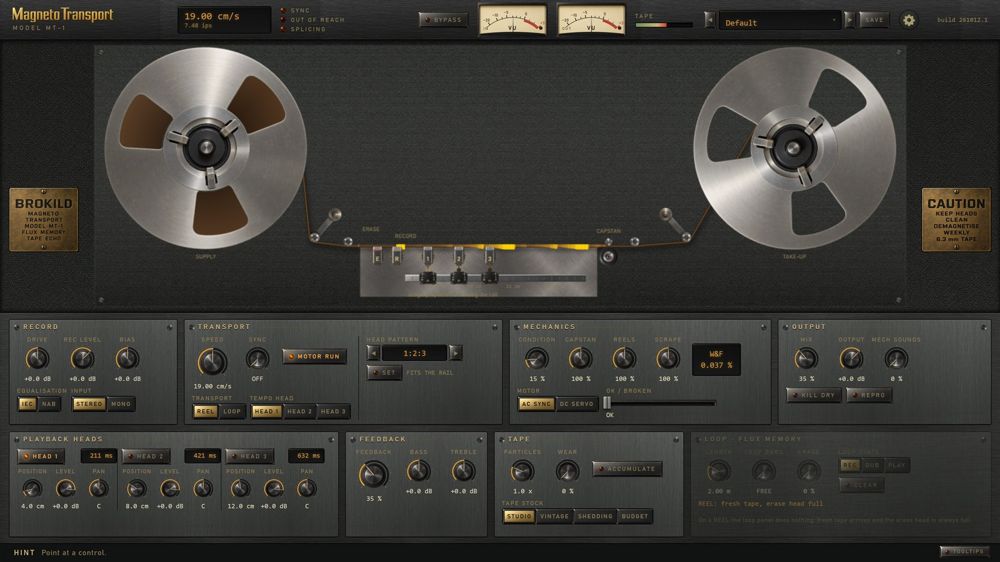
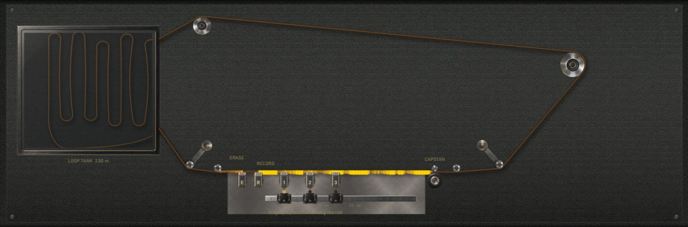
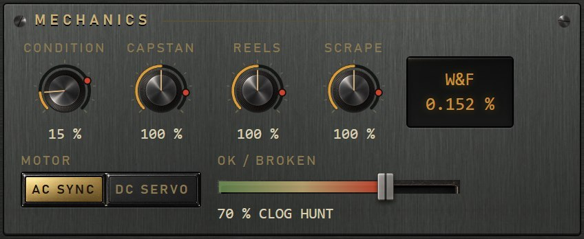
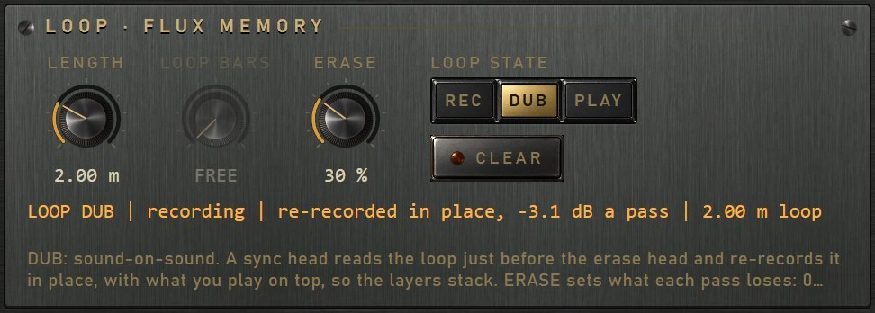
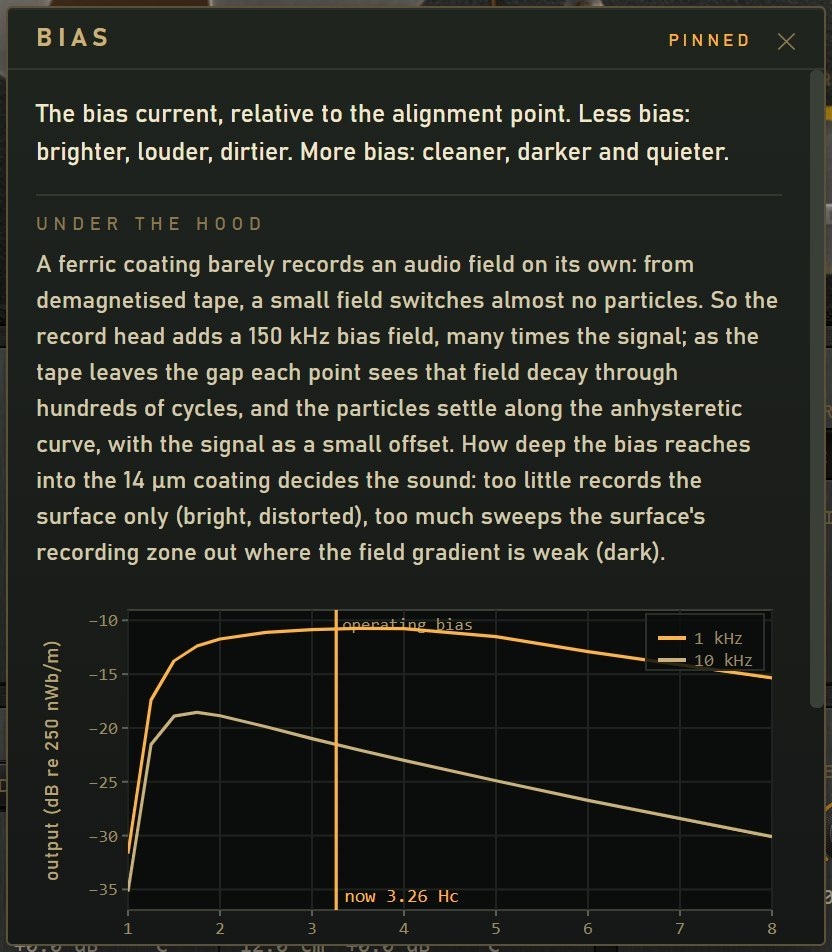

Brokild · VST3 effect
A tape echo in which nothing is faked.
There is no wow LFO, no saturation curve and no noise generator. The magnetic tape, the record, erase and three playback heads, the capstan motor and the reels are simulated, and the character is what the simulation does: echoes bend in pitch when the motor changes speed, a head moved along its rail gives real Doppler, the tape saturates because its oxide runs out of magnetisation, and the hiss is the statistics of the particles in the coating.
And on a closed loop of tape, FLUX MEMORY re-records the loop in place every pass, so overdubs stack and old recordings survive under what you play now.
It was made to find out how far a tape delay can be pushed beyond sound processing, towards a detailed physics simulation — down to the particles in the oxide and the layers of the coating they are recorded into.

Windows VST3 and standalone · build 261012.1 · free
Every artefact comes from simulated mechanics and magnetics.
Inside, the tape is magnetisation along its length in cells of half a micrometre, two tracks wide and four layers deep through the oxide. A record head with a real gap field and a 150 kHz bias writes into it through a Preisach model of the oxide; playback heads read it back through their gap, spacing and thickness losses, wherever they stand on the rail. Delay is not a number in the code — it is the time the tape takes to carry a recording from one head to the next, so changing the speed bends the echoes already on the tape, and the losses scale with speed by themselves.
The transport is mechanics. Wow, flutter and scrape flutter come from the capstan's runout and bearings, the reels' eccentricity and tension, and the tape sticking and slipping over the heads. The panel shows the machine as the simulation runs it: reels turning at the computed rate, heads on their carriages, and the tape coloured by the magnetisation it carries right now.


A finite loop of tape, 0.5 to 6 m long. In REC the loop is wiped and recorded every pass: the plain echo. In DUB it is sound-on-sound: a sync head reads the loop just before the erase head wipes it, and the record head writes it back in place with what you play on top, so overdubs stack. The ERASE knob sets how much of the loop each pass loses. PLAY holds the loop as it is.
Every pass is a generation of the tape, losing what tape loses — a little treble each time, through the head's gap and spacing losses — and nothing comes round louder than it went, at any speed or bias, because the re-record level is set from the loop's own gain as the machine stands. Tape has no undo.


An open reel that winds across as it runs, or a closed loop that can be cut to a number of bars. Speed continuously variable, or synced: pick a playback head as the tempo head and the motor runs at the speed that puts it on the note. Tempo changes glide with the motor's inertia.
Playback heads 1.5 to 24 cm from the record head, each with its own level and pan. HEAD PATTERN snaps them to rhythmic ratios such as the Space Echo's 1:2:3, then lets go.
Playback back into the record amplifier, with bass and treble in the loop. It self-oscillates past about two thirds of the knob, and the tape's own saturation holds it.
A 1970s studio tape, a 1960s low-output tape, the studio tape shedding its oxide, and cheap echo-machine tape. PARTICLES runs the hiss down to true silence; WEAR and a loop that wears on every pass.
TRANSPORT CONDITION and the three causes behind it, CAPSTAN, REELS and SCRAPE; an AC synchronous or DC servo motor; and OK / BROKEN, which moves the whole machine towards a wreck: clogged heads, a hunting motor, crinkled tape.
REPRO makes it a tape machine on an insert, with head 1's delay reported to the host. MECH SOUNDS adds the machine's own motor, capstan, reels and solenoids, off by default.
Twenty-four machines in six groups, from clean to strange, each levelled to the loudness of what goes in. Your own
presets are files in Documents\Brokild patches\Magneto Transport.
Every number on the cards is written by the plug-in's test bench, which runs with every build. A few of them:
| Measurement | Build 261012.1 |
|---|---|
| Unity at the operating level, defaults | +0.025 dB |
| Delay against head distance / speed | within 0.720 µs |
| Maximum output level, re 185 nWb/m (the 456 data sheet gives +12.3) | +12.3 dB |
| Hiss, studio stock, 19 cm/s, under 0 VU | −61.9 dBA |
| Wow and flutter, freshly serviced (DIN/IEC weighted, 2σ) | 0.036 % |
| Erase at 1.5 Hc, engine against the offline reference | −51.9 against −51.5 dB |
| Aliasing, 9 kHz at 12 dB over 0 VU, NORMAL | −63 dBFS |
| Cost, worst case (76 cm/s, three heads, feedback), NORMAL | 20.7 % of one core |
Windows 64-bit. The zip holds the VST3, a standalone application and the operating manual. Copy the
.vst3 folder into C:\Program Files\Common Files\VST3\ and rescan in your DAW. The panel
needs the Microsoft WebView2 runtime, present on almost every up-to-date Windows; if it is missing, the plug-in says
so and gives you the download link.
Free, under the GNU AGPLv3. Unsigned builds, offered as is. Source is in this repository under vst3-apps/magneto-transport/plugin.
An effect, so it carries no Brokild World FX rack. Quality ECO, NORMAL or HIGH; 47 host parameters, the loop controls included.